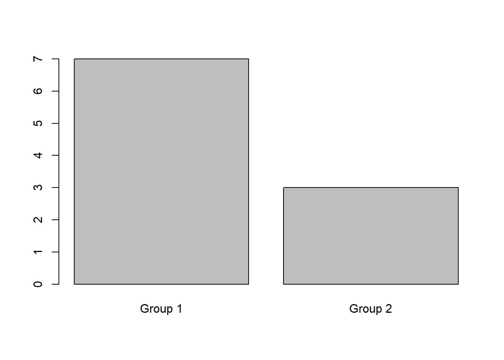

#Part 1 :
Import the package and dataset.
#install.packages(pkgs="http://www.karlin.mff.cuni.cz/~hlavka/sms2/MSES_1.1.tar.gz",repos=NULL,type="source")
#install.packages(pkgs="http://www.karlin.mff.cuni.cz/~hlavka/sms2/MSES_1.1.zip",repos=NULL)
library(SMSdata)
data(plasma) I choose plasma dataset for this works.
#Part 2 :
Understanding the dataset
dim(plasma)## [1] 10 4n <- dim(plasma)[1]
p <- dim(plasma)[2]The dataset have 10 observation and 4 variables.
We can look in more detail at the variables
summary(plasma)## group 8am 11am 3pm
## Group 1:7 Min. : 89.0 Min. : 83.0 Min. : 83.0
## Group 2:3 1st Qu.:106.0 1st Qu.:119.5 1st Qu.:101.5
## Median :116.0 Median :131.5 Median :108.0
## Mean :118.5 Mean :127.9 Mean :112.6
## 3rd Qu.:134.0 3rd Qu.:138.5 3rd Qu.:124.0
## Max. :151.0 Max. :173.0 Max. :147.0Description of the dataset :
The evolution of citrate concentration in the plasma is observed at 3 different times of day, 8 am, 11 am, and 3 pm, for two groups of patients. Each group follows a different diet.
So we have 1 Categorical Variable (group) and 3 numeric variables (8am, 11am and 3pm)
For the next part of the analyse we must change the names of the variable because having a number as the first character can be problematic
colnames(plasma)[2:4]<-c("v8am","v11am","v3pm")
attach(plasma)#Part 3 : Univariate analysis
Before starting the multivariate analysis, it is always important to take the time to perform a small univariate analysis in order to get to know the data set.
Group :
plot(group)
The observations are separate in two groups. 7 in the 1st and 3 in the second group. Each group follows a different diet.
8am :
hist(v8am,breaks =5,main ="Histogram of citrate concentration in the plasma at 8 am",freq = F,xlab ="8 am")quantile(v8am)## 0% 25% 50% 75% 100%
## 89 106 116 134 151summary(v8am)## Min. 1st Qu. Median Mean 3rd Qu. Max.
## 89.0 106.0 116.0 118.5 134.0 151.0var(v8am)## [1] 432.9444cv <- sd(v8am) / mean(v8am) * 100
cv## [1] 17.55892The minimum is 89, the median is 116 and the maximum is 151.
Mean : 118.5
variance : 432.94
Coefficient of Variation : 17.56
11am :
hist(v11am,breaks =5,main ="Histogram of citrate concentration in the plasma at 11 am",freq = F,xlab ="11 am")quantile(v11am)## 0% 25% 50% 75% 100%
## 83.0 119.5 131.5 138.5 173.0summary(v11am)## Min. 1st Qu. Median Mean 3rd Qu. Max.
## 83.0 119.5 131.5 127.9 138.5 173.0var(v11am)## [1] 662.3222cv_b <- sd(v11am) / mean(v11am) * 100
cv_b## [1] 20.12167The minimum is 83, the median is 127.9 and the maximum is 173.
Mean : 127.9
variance : 662.32
Coefficient of Variation : 20.12
We can see a increase values to the means, and the variance has increased too. The citrate concentration are less homogeneous at 11am than 8am.
3pm :
hist(v3pm,breaks =5,main ="Histogram of citrate concentration in the plasma at 3 pm",freq = F,xlab ="3 pm")quantile(v3pm)## 0% 25% 50% 75% 100%
## 83.0 101.5 108.0 124.0 147.0summary(v3pm)## Min. 1st Qu. Median Mean 3rd Qu. Max.
## 83.0 101.5 108.0 112.6 124.0 147.0var(v3pm)## [1] 325.1556cv_c <- sd(v3pm) / mean(v3pm) * 100
cv_c## [1] 16.01427The minimum is 83, the median is 108 and the maximum is 147.
Mean : 112.6
variance : 325.16
Coefficient of Variation : 16.01
We can see a decrease values to the means, and the variance has decreased too. The citrate concentration are more homogeneous at 3pm than 11am. We return to the 8am citrate concentration level.
#Part 4 : Multivariate analysis
In first we can comparate the distribution of the 3 different time schedules.
boxplot(plasma[,2:4])We can conclude the same thing as in the previous section, the citrate concentration in the plasma increase and then decreases. We can see 2 extrem values at 11 am.
Parallel Coordinate Plots : We make this graph to find (or not) a kind of dependency between the different covariates
library(MASS)## Warning: package 'MASS' was built under R version 3.6.3colorVector <- rep("black", dim(plasma)[1])
colorVector[group == "Group 1"] <- "red"
colorVector[group == "Group 2"] <- "green"
parcoord(plasma[,2:4],col=colorVector)The greens observation represente patients of the group 2.
Group 2 has a lower citrate concentration in the plasma than the rest of the population.
At 3pm all group 2 patients have all the lowest concentration.
And in the majority of cases, the people witj a importante citrate concentration at 8am were always the same at other times.
cor(plasma[,2:4])## v8am v11am v3pm
## v8am 1.0000000 0.7833958 0.7054034
## v11am 0.7833958 1.0000000 0.7979220
## v3pm 0.7054034 0.7979220 1.0000000All of corelation are positive.
Evolution between the times :
8am -> 11 am
plot(v8am,v11am,col=group)
abline(1,1)Red : Group 2
black : Group 1
Why is the line x=y?
If the point is above: increase your rate between the two times
If the point is below: decrease the rate between the two times
We have 8 points above and 2 point below, for the majority of patients the citrate concentration in the plasma increase between the 2 times.
We cannot necessarily notice a group effect because the points of the different colours are above and below the line.
11am -> 3 pm
plot(v11am,v3pm,col=group)
abline(1,1)We can see that here the concentration has dropped between the two time. (8/10 observations)
But still no group effect. The low values of the second group are still low but we do not see a more pronounced decrease than group 1. The values of group 2 are lower but for each time.